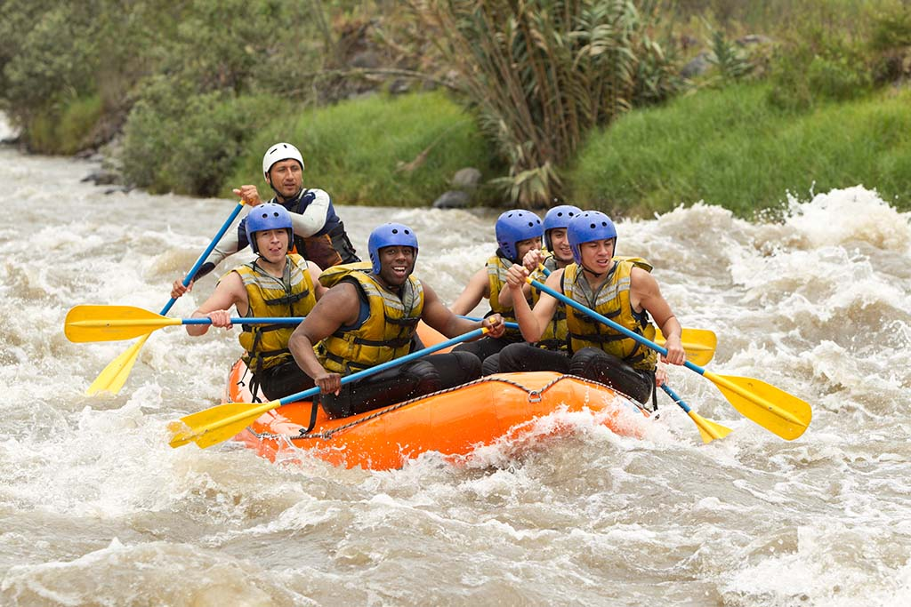
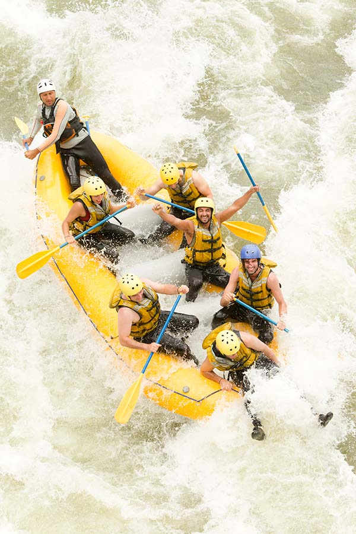

The Rapids

We are dedicated to delivering unforgettable rafting adventures that connect people with nature, foster teamwork, and inspire a spirit of exploration. Our mission is to ensure safety, sustainability, and pure exhilaration on every journey down the river.To be the leading rafting company recognized for exceptional experiences, environmental stewardship, and empowering communities to embrace the thrill of the outdoors. We envision rivers as pathways to discovery, unity, and lifelong memories. Ride the Rapids, Live the Adventure.
History
Riverbound Adventures began not as a business, but as a dare.
In the summer of 1982, two childhood friends, Mateo Cruz and Daniel Reyes, stood on the banks of the wild Agos River, watching its frothing rapids churn under the midday sun. They had grown up fishing its calmer stretches, but the upper reaches—where the water roared like a living beast—were considered untouchable. That day, armed with a homemade inflatable raft stitched from old truck inner tubes, they decided to challenge the river.
The journey was reckless, exhilarating, and nearly disastrous. They capsized twice, swallowed more water than they cared to admit, and emerged scraped, bruised, and grinning like fools. But in that chaos, they felt something rare: a sense of freedom that could not be bottled.
Over the next few years, Mateo and Daniel refined their craft. They studied river currents, learned safety protocols, and invested in proper equipment. By 1986, they had guided their first paying customers—three adventurous tourists who had heard rumors of “the crazy guys who ride the Agos.” Word spread quickly, and soon Riverbound Adventures was born.
The company’s early days were humble: a single raft, a pickup truck, and a shed that doubled as an office. But their reputation grew with every trip. They weren’t just offering rides; they were teaching people to respect the river, to understand its moods, and to embrace its unpredictability.
By the 1990s, Riverbound Adventures had expanded to multiple rivers across the region, each with its own personality—from the gentle meanders of the Verde River to the thunderous drops of the Lumang Lawa Gorge. They introduced safety briefings, trained guides, and even hosted annual “River Festival” events that brought together rafters from across the country.
Today, Riverbound Adventures is a thriving company with a fleet of rafts, a team of seasoned guides, and a legacy built on courage, camaraderie, and respect for nature. Mateo and Daniel still join the occasional trip, their laughter echoing over the rapids, reminding everyone that the company’s heart lies not in profit, but in the thrill of the ride.
As their motto says: The river is alive—ride it, respect it, and let it change you.